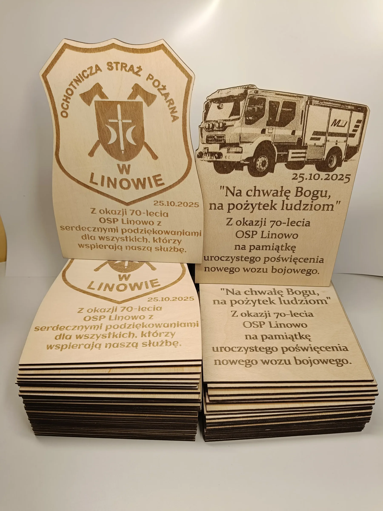
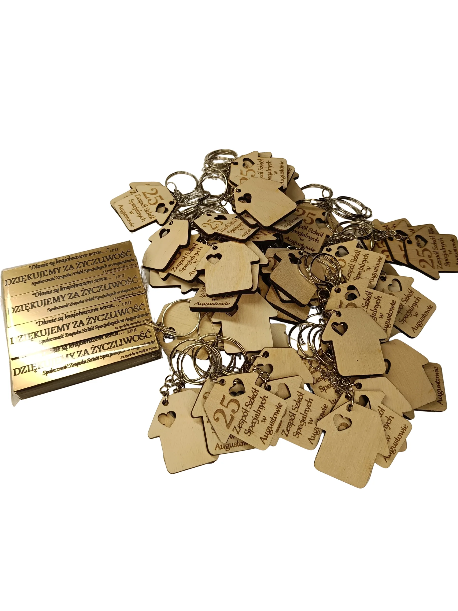
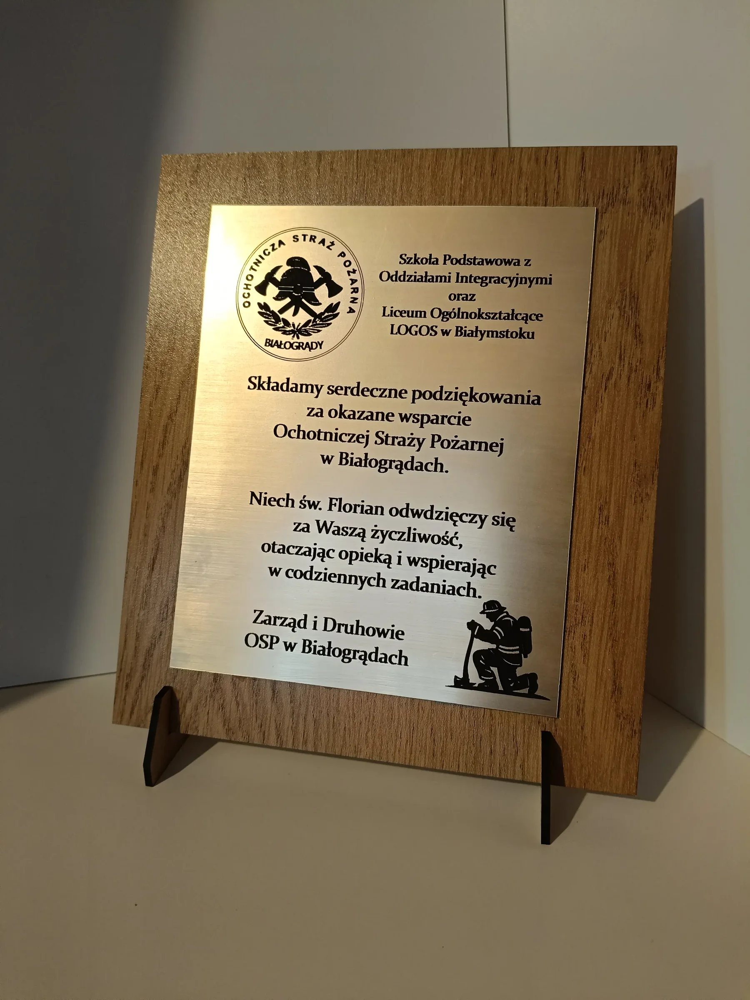

Podziękowania
Dla nauczyciela, partnera, wolontariusza albo osoby ważnej dla społeczności.
Zapytaj o ten kierunek ↗Podziękowania, dyplomy, oznaczenia i pamiątki dla szkół, bibliotek, urzędów i lokalnych instytucji.
Zapytaj o realizację ↗
Dla nauczyciela, partnera, wolontariusza albo osoby ważnej dla społeczności.
Zapytaj o ten kierunek ↗

Zaczynamy od prototypu i dopiero potem decydujemy o serii.
Zapytaj o ten kierunek ↗Wyślij zdjęcie, szkic albo kilka zdań. Wrócimy z konkretną propozycją.
Napisz e-mail ↗